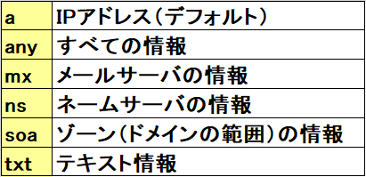
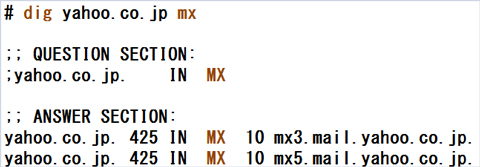
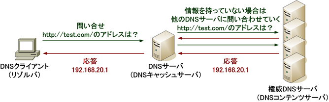
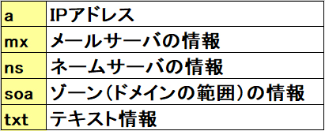

- 問題ID : 15457 クライアント側のDNS設定
- 履歴
DNSサーバに登録されている、「yahoo.co.jp」のメールサーバの情報を確認したい。適切なコマンドを選択しなさい。
正解
dig yahoo.co.jp mx
解説
digコマンドは、DNSサーバへ直接問い合わせて、指定した名前に関するDNSサーバからの応答を表示します。
また、表示する情報のタイプ（リソースタイプ）を指定する事もでき、詳細な情報を確認できるため、DNSに関するデバッギングツールとしても使用できます。
書式：dig [オプション] [@DNSサーバ] 名前 [検索タイプ]
主な検索タイプ

「@DNSサーバ」には問い合わせるDNSサーバを指定します。省略した場合は、そのホストに設定されているDNSサーバに問い合わせます。
-tオプションの後に検索タイプを指定しても情報を絞り込めます。
設問では、メールサーバの情報を確認とありますので「mx」が正解です。なお、「mail」や「ms」というタイプは存在しません。
以下は表示例です。（一部抜粋）

参考
DNS（Domain Name System）はドメイン名/ホスト名などの名前とIPアドレスを対応させるシステムです。
DNSサーバが名前とIPアドレスの対応情報（リソースレコード）を管理し、DNSクライアントからの問い合わせに対して名前解決のための情報を提供します。

DNSサーバにはDNSキャッシュサーバと権威DNSサーバがあり、インターネット上の多数のDNSサーバでドメイン情報を分散して管理しています。
・DNSキャッシュサーバ
権威DNSサーバに問い合わせを行い、得た情報をキャッシュに保持します。
保持している情報に該当する問い合わせがきた場合は権威DNSサーバに問い合わせずに応答することで、DNSクライアントへの応答速度を上げるとともに、権威DNSサーバの負荷も減らします。
・権威DNSサーバ（ネームサーバ）
特定のドメインの情報を管理する正当な権限を持つDNSサーバです。
「xxx.com」を管理する権威DNSサーバや、「xxx.jp」を管理する権威DNSサーバのように、ドメインごとに分散管理しています。名前に関する情報（コンテンツ）を保持するため、コンテンツサーバともよばれます。
DNSサーバが管理している情報をリソースレコードと呼び、主に以下のリソースタイプ（種類）があります。
